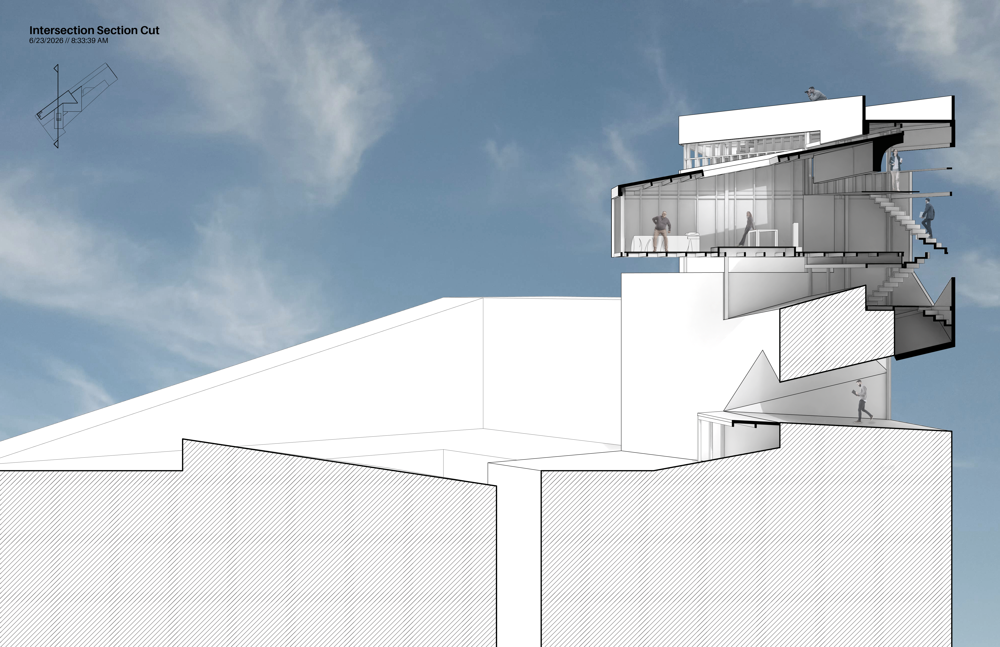

Writer's Passage
Spring 2026A project organizing light and space for a writer's retreat

The Site
After receiving a model as a starting point, a series of voids were removed to respond to the effects of sunlight. Based on the orientation of my site and its relationship to other sites, I noted that the front face was almost always blanketed with light, with most of the back dark until the late afternoon. Therefore, I cut out a tunnel and canyon for the light to penetrate through the site.
Additionally, I made moves to activate space along the back face by carving out a large void underneath and a long tunnel connecting it to the void before. Finally, to allow light into this cavern, I punched two holes into this space, one on top and one on the side.


Organization
Next, these voids were partially filled in and expanded upon by the masssing for the retreat. There are two modules: the public mass, containing the library and space for visitors oriented with respect to the site, and the private mass, containing the writer's living space oriented north to south to allow the sun to penetrate through the spaces. The two different orientations create a distinction in program. However, this distinction is contrasted by the "plug-in" logic of the intersection of the masses; the private space is inserted into the public circulation with no walls in between to both allow light to penetrate through the central axis and to promote collaboration among writers.
For circulation, the library is accessed by going through the triangular light tunnel, which frames views of both the rest of the city and beyond in both directions. A bridge placed above the tunnel snaking along the back face allows writers to get to the rest of the spaces by bringing them to a vertical shaft of stairs.

Facade and Framing
The final piece was the structural framing and facade. The project is made of three different layers: the exterior skin, the plank framing, and the interior skin. Both exterior and interior facades are peeled back to different degrees to create a loop around the upper structure, weaving together the public and private spaces.